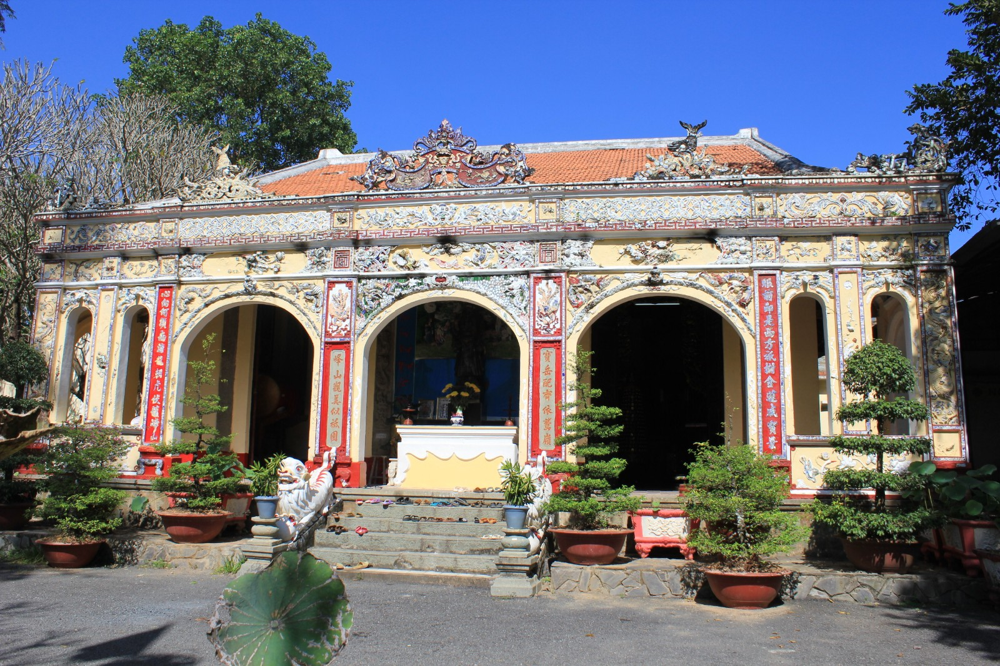
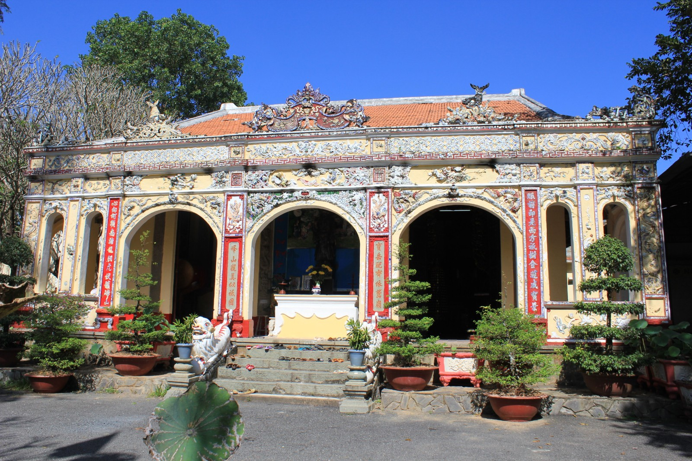

1. Top 7 danh lam thắng cảnh đẹp nhất thế giới.
2. Top 4 danh lam thắng cảnh nổi tiếng nhất Việt Nam.
 



Toàn cảnh bên ngoài chùa
Chùa Bửu Phong được dưng vào thế kỉ XVII. Tài liệu cuat Bảo tàng tỉnh Đồng Nai cho biết, tương truyền của chùa là một am tranh thờ Phật do ngài Bửu Phong dựa năm 1616. Đến năm 1678, một số Phật tử người Hoa đến vùng này sinh sống, đã cất lại ngôi chùa bằng ngạch ngói và thỉnh ngài Thành Chí đến trị trì, Đây là một trong ba ngôi chùa cổ nhất ở Đồng Nai, chùa Bửu Phong có lượng phật tử khá đông. Họ đến đây không chỉ để bái phật cầu may mà còn để chiêm ngưỡng cảnh quan sơn thủy hữu tình và những họa tiết, câu đối chạm khắc điêu luyện trên từng bức tường, cột gỗ trong chùa.